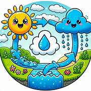
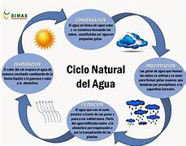
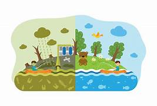
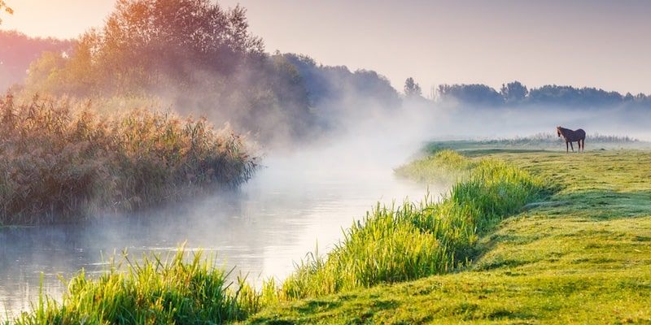
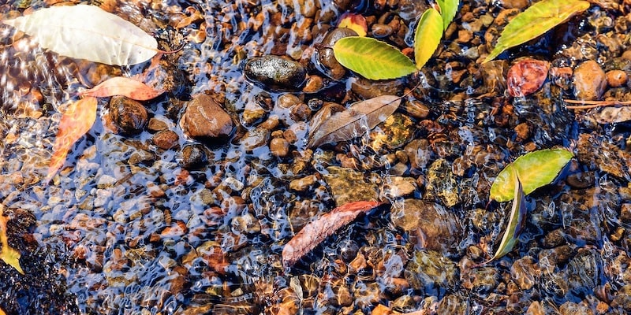
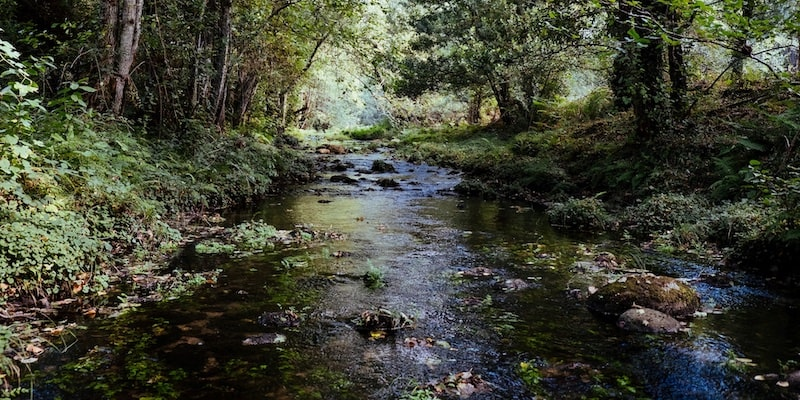

EL CICLO DEL AGUAEl ciclo del agua (también conocido como ciclo hidrológico) es el proceso de circulación del agua en el planeta Tierra. Durante este ciclo, el agua sufre desplazamientos y transformaciones físicas (por acción de factores como el frío y el calor), y atraviesa los tres estados de la materia: líquido, sólido y gaseoso.
Está conformado por cinco etapas (evaporación, condensación, precipitación, infiltración, escorrentía) durante las cuales el agua cambia de estado en un ciclo continuo e ilimitado.

El agua es una de las sustancias más abundantes del planeta y cubre la mayor parte de la Tierra. Se puede encontrar, en estado líquido, en océanos y mares; en estado sólido, en glaciares y casquetes polares; y, en estado gaseoso, en el vapor de agua. Es fundamental para la vida en la Tierra (todos los seres vivos necesitan agua para vivir y desarrollarse), y a través de su ciclo, el agua circula por la hidrósfera.
El ciclo del agua es un ciclo biogeoquímico, es decir, forma parte de los ciclos que en la naturaleza permiten el movimiento y la transformación de los elementos y compuestos químicos a través de los sistemas biológicos, geológicos y químicos de la Tierra. Estos ciclos son fundamentales para mantener el equilibrio de los ecosistemas y la vida en el planeta.
El ciclo del agua (también conocido como ciclo hidrológico) es el proceso de circulación del agua en el planeta Tierra. Durante este ciclo, el agua sufre desplazamientos y transformaciones físicas (por acción de factores como el frío y el calor), y atraviesa los tres estados de la materia: líquido, sólido y gaseoso.
Está conformado por cinco etapas (evaporación, condensación, precipitación, infiltración, escorrentía) durante las cuales el agua cambia de estado en un ciclo continuo e ilimitado.
El agua es una de las sustancias más abundantes del planeta y cubre la mayor parte de la Tierra. Se puede encontrar, en estado líquido, en océanos y mares; en estado sólido, en glaciares y casquetes polares; y, en estado gaseoso, en el vapor de agua. Es fundamental para la vida en la Tierra (todos los seres vivos necesitan agua para vivir y desarrollarse), y a través de su ciclo, el agua circula por la hidrósfera.
El ciclo del agua es un ciclo biogeoquímico, es decir, forma parte de los ciclos que en la naturaleza permiten el movimiento y la transformación de los elementos y compuestos químicos a través de los sistemas biológicos, geológicos y químicos de la Tierra. Estos ciclos son fundamentales para mantener el equilibrio de los ecosistemas y la vida en el planeta.

| EVAPORACIÓN |
 |
| CONDENSACIÓN |
 |
| PRECIPITACIÓN |
|
| INFILLTRACIÓN |
 |
| ESCORRENTÍA |
 |
| INICIO |
TRADICIONES |
MIGRACIÓN |
CICLO DEL AGUA |
ALIMENTACION SALUDABLE |